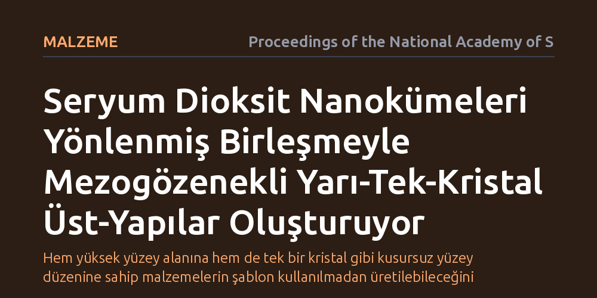

MALZEME · Proceedings of the National Academy of Sciences · 2026-10-23
Araştırmacılar, katalizör olarak kritik önem taşıyan seryum dioksitin klasik yöntemlerle üretilemeyen gözenekli ve düzenli kristal yapılarını elde etmeyi hedefledi. Seryum dioksit nanokümelerinin yönlenmiş birleşme yoluyla, belirli yüzey düzlemlerini koruyan mezogözenekli yarı-tek-kristal üst-yapılar oluşturduğu gösterildi.
Hem yüksek yüzey alanına hem de tek bir kristal gibi kusursuz yüzey düzenine sahip malzemelerin şablon kullanılmadan üretilebileceğini kanıtlamaktadır.

Kimya endüstrisinde ve temiz enerji teknolojilerinde kullanılan katı katalizörlerin verimi, büyük oranda atomik yüzey yapılarına bağlıdır. Bir malzemenin kimyasal tepkimeleri hızlandırabilmesi için hem gaz ya da sıvı moleküllerin kolayca temas edebileceği geniş bir yüzey alanına sahip olması hem de tepkimenin gerçekleştiği atom basamaklarının kararlı ve düzenli bir yapıda bulunması gerekir. Ancak malzeme biliminde bu iki özellik geleneksel olarak birbiriyle çelişir: Geniş yüzey alanı sağlamak amacıyla üretilen gözenekli yapılar genellikle düzensiz, kusurlu ve çok kristalli iken; atomik düzeni kusursuz olan tek kristal yapılar ise kalın ve gözeneksiz olduklarından çok küçük bir yüzey alanı sunar.
Özellikle nadir toprak elementlerinden türetilen seryum dioksit, oksijen atomlarını hızla alıp verme kapasitesi sayesinde egzoz gazlarının temizlenmesinden hidrojen üretimine ve karbondioksitin dönüştürülmesine kadar pek çok alanda temel bir malzemedir. Araştırmacıların uzun süredir çözmeye çalıştığı temel mesele, seryum dioksiti hem yüksek gözenekliliğe ve geniş yüzey alanına sahip hem de tek bir kristal gibi belirli yüzey düzlemlerini muntazam biçimde sergileyen bir forma sokmanın mümkün olup olmadığıydı.
Geleneksel malzeme sentezinde kristaller, sıvı çözeltiden atom veya iyonların tek tek ayrılarak bir çekirdek etrafında birikmesiyle, yani klasik çekirdeklenme ve büyüme yoluyla oluşur. Gözenek elde etmek istendiğinde ise genellikle yapı içine geçici organik şablon molekülleri yerleştirilir ve sonrasında bu moleküller yüksek sıcaklıkta yakılarak uzaklaştırılır. Fakat bu sert ısıl işlemler çoğunlukla gözenek duvarlarındaki kristal düzenini bozar ya da yapının çökmesine yol açar.
Bu çalışmada araştırmacılar, klasik yöntemlerin yerine "yönlenmiş birleşme" adı verilen klasik olmayan bir kristal büyüme mekanizmasına odaklandı. Deneylerde seryum dioksit nanokümeleri kontrollü çözelti koşullarında serbest bırakıldı. Bu küçük yapı taşlarının birbiriyle rastgele çarpışıp düzensiz topaklar oluşturması yerine, yüzey enerjilerini en aza indirecek şekilde kristalografik yüzeyleri boyunca kendi kendilerine hizalanıp kaynaşmaları sağlandı. Bu süreç, gelişmiş elektron mikroskopisi ve kristal yapı analizleriyle laboratuvar ortamında incelendi.
Elde edilen bulgular, seryum dioksit nanokümelerinin yönlenmiş birleşme mekanizması sayesinde bir araya gelerek mezogözenekli yarı-tek-kristal üst-yapılar meydana getirdiğini gösterdi. Birbirine bağlanan nanokümeler, aralarında 2 ila 50 nanometre genişliğinde düzenli mezogözenekler bırakırken, kristal kafes çizgileri tüm yapı boyunca sanki tek bir büyük kristalmiş gibi kesintisiz bir yönelim sergiledi.
Daha da önemlisi, ortaya çıkan bu üst-yapıların yüzeyleri rastgele atomik pürüzlerden oluşmak yerine, belirli ve kararlı kristal düzlemleriyle sınırlandı. Bu durum, katalizör olarak görev yapacak malzemenin hangi yüzeyinin reaksiyona gireceğinin önceden tam olarak bilinebilmesi ve kontrol edilebilmesi anlamına gelmektedir. Böylece hem moleküllerin rahatça dolaşabileceği açık gözenek kanalları hem de yüksek kimyasal kararlılık tek bir malzemede buluşturuldu.
Bu çalışmanın ortaya koyduğu sonuç, gözenekli kristal malzemelerin üretiminde organik şablon moleküllerine veya sonradan uygulanan yıkıcı ısıl işlemlere bağımlı olunmadığını kanıtlamaktadır. Yönlenmiş birleşme süreci doğru yönlendirildiğinde, nano ölçekli yapı taşları kendi kendilerine organize olarak karmaşık ve düzenli üst-yapılar inşa edebilmektedir.
Elde edilen malzeme yapısı, özellikle karbondioksitin yakıt moleküllerine dönüştürülmesi veya metanın kuru ıslahı gibi yüksek sıcaklık ve dayanıklılık gerektiren katalitik süreçler için sağlam bir temel sunmaktadır. Ancak yöntemin endüstriyel üretime aktarılabilmesi için sentez parametrelerinin daha geniş hacimlerde hassasiyetle kontrol edilmesi ve malzemenin zorlu tepkime ortamlarındaki uzun vadeli dayanımının sınanması gerekmektedir.